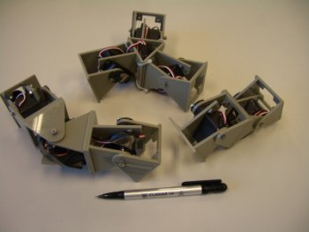
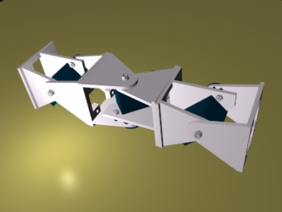
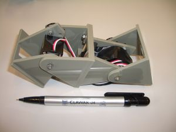
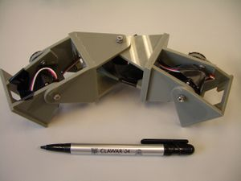
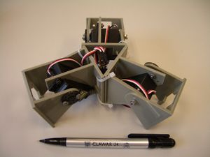
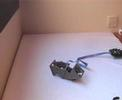
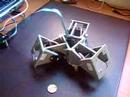
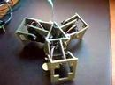
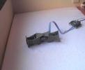

|  |
 |


Contenido
[ocultar]Introducción
MiniCube es el nombre dado al grupo de robots creados para solucionar el problema de las configuraciones mínimas en la locomoción:
| ¿Cual es el número mínimo de módulos necesarios para conseguir locomoción en 1 y 2 dimensiones?
¿Qué tipos de movimientos pueden realizar? |
Las configuraciones encontradas son las siguientes:
| 
MiniCube-1 |

MiniCube-2 |

MiniCube-3 |


- Minicube-I: Compuesto por 2 módulos que se mueven verticalmente. Se puede desplazar hacia adelante y atrás
- Minicube-II: Compuesto por 3 módulos. Los de los extremos se mueven verticalmente y el central lo hace horizontalmente. Esta configuración puede realizar al menos cinco tipos de movimientos:
- Desplazamiento en línea recta, hacia adelante y atrás
- Giros circulares
- Desplazamiento lateral
- Rotación paralela al suelo
- Rodar sobre su cuerpo
- Minicube-III. Topología de 2 dimensiones compuesta por tres módulos conectados en estrella, formando 120 grados. Los movimientos que puede realizar son:
- Desplazamiento en línea recta hacia 3 direcciones diferentes
- Rotación paralela al suelo
Autor
Licencia
| |
| Este proyecto tiene una licencia libre. Se permite expresamente su copia, modificación, distribuición y fabricación siempre que se reconozca a los autores y se comparta el proyecto bajo la misma licencia.
Descarga de Responsabilidad. Los autores no se hacen responsables en ningún caso de los posibles daños o pérdidas de garantía que pueda ocasionar el uso, debido o indebido de la información contenida en este proyecto. |
Vídeos
Simulaciones

|
VER VIDEO Minicube-I. Simulación del movimiento en línea recta para diferentes valores de la amplitude y diferencia de fase |

|
VER VIDEO Minicube-II. Simulación de los diferentes modos de caminar |

|
VER VIDEO Simulación del modelo alámbrico de la configuración mínima PP (pitch-pitch). |
Experimentos
|  |
|

|
|
|  |
|
 |
|


Frikis
|  |
|

Noticias
- 17/Dic/2008: Añadida simulación del modelo alámbrico de la configuración PP
- 16/Dic/2008: Añadida simulación de Minicube
- 6/Mayo/2008: Comenzada esta página
Enlaces
- Artículo sobre las configuraciones mínimas (en inglés)